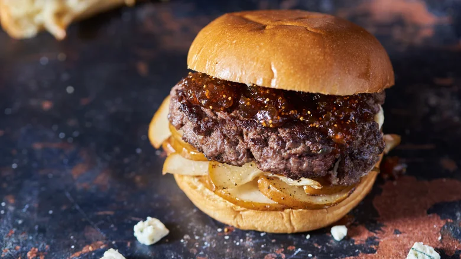

Blue Cheese-Stuffed Burgers With Fig And Pear Recipe
Back to main

Ingredients list:
- 2 bosc pears, thinly sliced
- 2 tablespoons olive oil
- 1 tablespoon honey
- 2 teaspoons salt, divided
- 2 teaspoons ground black pepper, divided
- 1 pound ground beef
- 2 teaspoons Worcestershire sauce
- ½ tablespoon finely chopped rosemary
- ½ cup crumbled blue cheese
- Cooking oil, as needed for greasing the skillet
- 4 hamburger buns
- ½ cup fig jam
| Preparation time |
Cooking time |
Serving size |
10 minutes |
22 minutes |
4 burgers |
Instructions:
- Preheat the oven to 400 F and line a baking sheet with parchment paper.
-
Spread the pear slices on the sheet tray and toss with olive oil, honey, 1 teaspoon salt, and 1 teaspoon pepper. Arrange in a single layer
and roast for 12-15 minutes until soft and golden brown. (Keep the oven on for a later step.)
-
Meanwhile, mix together the beef, remaining salt and pepper, Worcestershire sauce, and rosemary until just combined. Split into 4 sections,
then split each section in half to make 8 portions.
-
Form 4 beef portions into small patties. Make an indentation in the center of each patty and add about 2 tablespoons crumbled blue cheese
into each.
-
Form the remaining 4 beef portions into patties and place these on top of the cheese. Pinch the sides together and flatten as much as
possible to seal the burgers.
-
To cook the burgers, heat an oiled cast iron skillet over medium heat. Add the burgers and sear, pressing them down to avoid shrinking or
separating, until browned, about 2-3 minutes per side.
-
To finish the patties, place them on a sheet tray and warm them in the oven until cooked through and the cheese has melted, about 2 minutes.
-
To build the burgers, line the bottom buns with pears, then top with a patty. Spread 2 tablespoons fig jam onto each patty, then add the top
bun. Repeat with the remaining burgers and serve immediately.